HONKI
1. Overview
HONKI is an eight-track phrase generator and sound source system for iPad. A pattern has 8 tracks, and each track has 8 segment memory slots.

Track structure
| TRACK 1 to 4 | Melodic tracks. Notes are edited in the TRACK 1 to 4 editor on MAIN. |
| TRACK 5 to 8 | Drum tracks. Shown as FOUNDATION, GROOVE, TIMELINE, LEAD on MIXER and PERFORM. Edited in the DRUMS editor on MAIN. |
| Role pairing | TRACK 1 and 5 are foundation, 2 and 6 groove, 3 and 7 timeline, 4 and 8 lead. |
| Segment | Each track has 8 segment slots. Three playback modes: SINGLE, SEQUENCER, RANDOM. Drum tracks also have FOLLOW. |
| Default pitch range | MIDI pitch 36 to 72. |
| Sound source | One of four per track: SYNTH, SAMPLE, PHYSICAL, AU. |
The six pages
| MAIN | Phrase editing and segment management. The page shown at launch. |
| VOICE | Sound source selection and parameters. |
| MIXER | Eight-track mixing, EQ, compression, effect sends, master effects. |
| UTILITY | 8-stage envelope, LFOs, CV output matrix. |
| PERFORM | Custom control panel and mappings. |
| VISUAL | Video source and four video processing stations. |
To switch pages, tap a page tab in the top bar or press number keys 1 to 6 on an external keyboard. While an edit overlay is open, the number keys switch between TRACK 1 to 4 and DRUMS instead. Page switching can be assigned with MIDI Learn. Two-finger swipe for page switching has been removed.
Heading position
The square button at the right end of the top bar moves the heading between corners, in the order top left, top right, bottom left, bottom right. When the heading is at the bottom, the Transport bar moves to the top of the screen.
Project slots
| Slot count | 26 banks (A to Z), 10 patterns per bank (00 to 09). Slot IDs use the format A-00. |
| Stored per slot | bank, programs, modulation, PERFORM layout, MASTER FX, per-track AU. |
| App-wide (not per slot) | INPUT COMP, HUE, CV device binding. |
| At launch | Restores the last used slot. |
Undo
Undo works on whole-bank snapshots, up to 100 steps. Multiple changes within the same tick merge into one step, and a drag merges into one step. MIDI Learn writes, TAP tempo and bank loading do not enter undo.
2. Top Bar

| Timer | Shows "H O N K I" at launch. Starts counting after the first PLAY and its recording confirmation (Y or N), in MM:SS format. Tap twice to reset; the "Click Twice to Reset" hint sits next to it. |
| MADZINE | Brand text. |
| A-00 menu | Two-level menu. The first level starts with CLEAR, followed by banks A to Z; the second level is patterns 00 to 09. MIDI Learn can be assigned as "next bank". |
| CLEAR | If the bank has content, asks "Clear everything?" first. Clears the bank, programs, SWING and TRANSPOSE to 0, modulation, PERFORM layout, MIDI bindings, per-track AU, MASTER FX, CV routing. Keeps INPUT COMP, HUE, CV device and STEREO OUT. |
| FILE menu | COPY, PASTE, SAVE, LOAD, plus a non-tappable VERSION item (shows the version number). PASTE is only available when the clipboard is not empty. |
| SAVE | Exports a .honki file. The default file name on iOS is "HONKI slot". |
| LOAD | Imports a .honki file. Asks "Replace current bank?" "Current changes will be lost." On failure shows "Bank File Error". |
| Page tabs | Six tabs, see chapter 1. |
| Corner button | Square button at the right end, showing the current heading corner. Tap to cycle to the next corner. |
.honki files
The current file format contains the bank, programs, per-track AU, MASTER FX, modulation and PERFORM layout. Older .honki files and plain bank files can be imported.
3. Transport

| PLAY / STOP | When not in the recording state, pressing PLAY shows three segments inside the button: Y, REC?, N. It collapses after 5 seconds. Y records and plays, N plays only. The button shows STOP during playback. Can be assigned with MIDI Learn. |
| Recording stop button | Shown only in the recording state, as a red-dot capsule button to the left of PLAY. Pressing it shows "STOP RECORDING?" Y / N, which closes after 5 seconds. For the files produced, see chapter 14. |
| MOTION | The button has two lines of text: MOTION and HOLD RECORD. Tap to toggle MOTION playback: yellow when playback is on (default), no colour when off. Hold for 1 second to start recording; while holding, red fills from left to right, and releasing early or dragging away cancels. The button is red while recording; tap to stop recording. Playback turns on automatically when recording starts. Cannot be assigned with MIDI Learn. See chapter 13. |
| RESET | Available only during playback. Returns the play position to zero. Can be assigned with MIDI Learn. |
| BPM | 20 to 300. Drag vertically to adjust, tap to type a number. Dimmed to 40% when using an external clock. Can be assigned with MIDI Learn. |
| TAP | Averages up to 4 taps within a 2-second window. The buffer clears 5 seconds after the last tap. Not included in undo. Unavailable with an external clock. |
| SCALE | Two-level menu: scale first, then 12 root notes. The button shows the root and scale name. 16 built-in scales: Chromatic, Major, Minor, Penta Major, Penta Minor, Dorian, Phrygian, Lydian, Mixolydian, Locrian, Major Triad, Minor Triad, Blues, Arabic, Japanese, Whole Tone; followed by user scales and USER SCALE EDITOR. The menu marks how well each scale suits the current STYLE with a number of asterisks. |
| SWING | Filled horizontal fader, 0 to 100. Double-tap to return to 0.5. Odd steps are delayed by stepDuration x 0.25 x swing. Triplet notes are not affected by SWING. Can be assigned with MIDI Learn. |
| STYLE | The popover contains an AMOUNT knob (0 to 1) and 9 styles in two columns: West African, Afro-Cuban, Brazilian, Balkan, Indian, Gamelan, Electronic, Breakbeat, Techno. Both AMOUNT and the style index can be assigned with MIDI Learn. |
| SETUP | Opens and closes the SETUP panel. See chapter 11. |
| MIDI | Toggles MIDI Learn mode. The label is always MIDI; the background changes when on. Shortcut Cmd+L. When on, assignable controls show a dashed outline. Pressing MIDI turns MOD off. See chapter 12. |
| MOD | Toggles MOD mode. Located to the right of MIDI. Off at launch. When on, the button is in the accent colour and controls that can be modulated show a solid accent outline; tapping an outlined control does not change its value but opens the MOD ROUTE panel. Controls without an outline work as usual. Mutually exclusive with MIDI. Cannot be assigned with MIDI Learn. See chapter 9. |
| UNDO / REDO | Dimmed to 40% when there is nothing to undo or redo. Shortcuts Cmd+Z, Cmd+Shift+Z. PERFORM layout editing uses PERFORM's own undo stack. |
| HUE | "HUE" text and a colour wheel. Popover title "ACCENT HUE": drag the outer ring to change hue, drag the centre disc vertically to change saturation (0 to 2). |
USER SCALE EDITOR
| CLOSE | Closes the editor sheet. |
| SCALE NAME | Scale name text field. |
| Pitch class buttons | 12 buttons, 2 rows of 6, relative to the global ROOT. The root is included by default. |
| Interval summary | Shows the selected intervals; with no pitch class selected it shows "SELECT AT LEAST ONE PITCH CLASS". |
| SAVE NEW SCALE / SAVE CHANGES | Adds a new scale or saves edits. |
| CANCEL EDIT | Cancels the current edit. |
| SAVED USER SCALES | List of saved scales; when empty it shows "No user scales saved yet.". Each entry has SELECT, EDIT, DELETE. Deleting the scale in use returns the global scale to Chromatic. |
4. MAIN

Track tab row

| Full-screen buttons | One diagonal-arrow button at each end of the row. Opens or closes the editor in full screen. |
| MULTI | Multi-track synchronized editing. When on, synchronized knobs show a dashed ring. |
| S | Clears solo on all tracks. |
| Track tabs | Tap to select a track; tap twice within 0.35 seconds to toggle SOLO; hold 0.45 seconds to toggle MUTE. The tab text is the track number and current segment (for example 1-1). |
Parameter row

| MUTE / SOLO | Mute and solo for the current track. |
| P | Program menu: SAVE, LOAD, CLEAR, for Program 1 to 8. |
| LOCK | 0 to 100%, vertical drag, no double-tap reset. |
| DECAY | Melodic tracks show 0 to 100% with an internal range of -0.99 to 0.99; drum tracks range 0.2 to 2.0 (1.0 shows as 44%). Double-tap resets (drum tracks 1.0, melodic tracks -0.78). |
| DENSITY | 0 to 100%. Double-tap clears the segment override. |
| Segments 1 to 8 | Three states: missing, empty, filled. Shows a label when a RATIO is set. Chain state is shown as a 3pt bar at the bottom; the playing segment shows a 3pt line at the top. Tap priority: chain setup > RANDOM pool > MULTI > select. |
| SINGLE | Plays only the current segment, shows SEG n. |
| SEQUENCER | Tap START, then the start slot, then END, then the end slot; afterwards shows SEQ a-b. |
| RANDOM | Shows CHOOSE; tap slots to add them to or remove them from the random pool. |
| FOLLOW | Drum tracks only. Follows the segment of the paired melodic track. |
Left column

| MASTER TRANSPOSE | Left to right: "-", the value field, "+". Tap the value field to type a number, drag vertically to change it. Range ±24 semitones. |
| MASTER LOCK / DECAY / DENSITY | Writes the corresponding parameter on all 8 tracks at once. |
| KEYS | The only button at the right of the header row. When on, the track bars are replaced by a keyboard. See KEYS mode below. |
| Track bars | Show the content of the current bar of each track. On drum tracks the bar height is velocity; on melody tracks the bar height is pitch position and the opacity is velocity. Cells outside the play range are dimmed. The step ruler shows the step numbers of the current bar; the page is synchronised with the editor on the right. Track bars are for viewing only; notes are entered in the editor on the right. |
| Range handles | The handles at both ends of each track bar are always shown. Drag them to set the start and end of the play window; the start and end steps of that track are shown while dragging. Holding a handle at the edge turns the page. Up to 4 fingers can drag at once. |
| Triplet marker | When a segment has triplet notes, a thin three-part marker appears at the bottom of every two cells of the track bar. The first part is shared with the straight step and is not drawn separately; the second and third parts are filled with the track colour when they hold a note, with opacity showing velocity. |
Track bars do not support long press.
Phrase editor (TRACK 1 to 4)

Left button column, top to bottom: FOLLOW (shown only when there is more than one bar), TRI and RANGE, SEMI DOWN and SEMI UP, OCTAVE DOWN and OCTAVE UP, IMPORT MIDI, LOCK and CLEAR, COPY and PASTE, PHRASE FLIP and RATIO, SCALE menu, and the bottom row of lane dropdown and EDIT.
| Bar row | One page is one bar of 16 steps, up to 64 bars. Tap a page number to switch; long-press 0.6 seconds to show "DELETE BAR n?" Y / N. "+" adds a bar. With more than 8 bars, 8 are shown at a time with switch buttons at both ends; full screen shows all bars. The bar being played has a colour band at the bottom. |
| Full screen | Full screen shows two bars at once, and edge page turning moves two bars at a time. Page numbers, COPY / PASTE of 1 BAR and bar deletion still work on a single bar. |
| Edge page turning | When stretching a note horizontally, sweeping across a lane, or dragging START / END, holding at the edge for 0.3 seconds turns the page. Changing pitch vertically does not turn the page. |
| START / END | Sets the start and end steps of playback, shown as "START n END m STEPS k"; BARS is added above 16 steps, and RATE is added when RATIO is not 1x. |
| FOLLOW | Makes the page follow playback. Toggled only by this button. |
| TRI | Toggles the triplet grid. See "TRI triplet grid" below. |
| RANGE | Opens the PITCH RANGE window with two fields, HIGH and LOW, the upper and lower limits of the pitch range. Tap to type a note name, drag vertically for one semitone per 24px; both fields can be dragged at once. HIGH is at least one semitone above LOW. Tap outside the window to close. |
| SEMI DOWN / UP | Transposes the whole segment by ±1 semitone; unavailable at the limit. Triplet notes are transposed as well. |
| OCTAVE DOWN / UP | Transposes the whole segment by ±12 semitones; unavailable at the limit. Triplet notes are transposed as well. |
| IMPORT MIDI | Imports a .mid file. On completion shows "IMPORTED n NOTE(S)", with "SKIPPED m" added when notes were skipped; errors are shown in red. The message disappears after 4 seconds. Does not affect triplet notes. |
| LOCK | Toggles lock mode. |
| CLEAR | Two-stage: "CLEAR LOCK?" appears. Y clears all notes including locked ones, N clears only unlocked notes; triplet notes are handled the same way. Cancels automatically after 5 seconds. |
| COPY | Shows "COPY BAR n OR ALL?"; choose 1 BAR or ALL. Triplet notes are copied as well. |
| PASTE | Can paste across tracks; the clipboard is kept after pasting. When the source has no triplets, the triplets of the destination are cleared. |
| PHRASE FLIP | Reverses the phrase within the play window; requires at least 2 steps. Triplet notes are reversed as well. |
| RATIO | The button face shows RATIO and the current value. 15 options: x8, x6, x4, x3, x2.5, x2, x1.5, 1x, /1.5, /2, /2.5, /3, /4, /6, /8. Triplets scale by the same ratio. |
| SCALE | Segment scale menu: GLOBAL, built-in scales, user scales, each with 12 root notes. |
| Lane dropdown | On the left half of the bottom row of the button column. Selects the lane shown below the note grid, seven items. See the table below. |
| EDIT | On the right half of the same row, beside the lane dropdown. Opens the tall parameter editor. See "EDIT panel" below. |
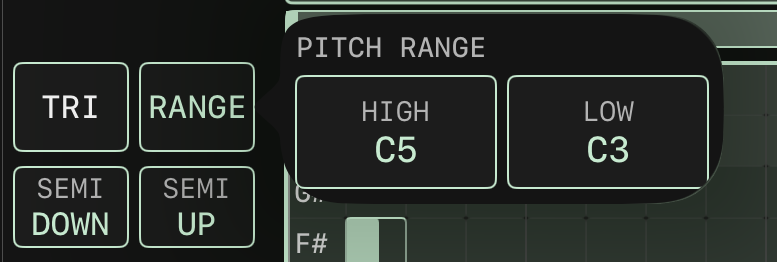
Lanes
| VELOCITY | 1 to 127; shows "VELOCITY n" while dragging. New notes are 100. |
| PROBABILITY | 0 to 100%; shows "PROB nn%". Default 100%. |
| PITCH PROBABILITY | 0 to 100%; shows "PITCH nn%". The probability of a random pitch. Default 0. |
| DECAY | 0 to 100%; shows "DECAY nn%". Default 50%, which follows the DECAY of the segment; below 50% is shorter, above 50% is longer. |
| RATCHET | 0 to 100%; shows "RATCHET nn%". The probability that the step retriggers. Default 0. |
| RATCHET COUNT | The number of retriggers, nine values: 2, 3, 4, 6, 8, 12, 16, 24, 32; shows "COUNT n". Default 2. For notes whose RATCHET is 0, the bar in this lane is faded but can still be edited. |
| RATCHET COUNT PROBABILITY | 0 to 100%; shows "COUNT PROB nn%". Default 0. When a RATCHET occurs, a second check is made: if it passes, the count becomes random, drawn from 1 and the values not exceeding the set COUNT, where 1 means the step does not retrigger; if it does not pass, the set COUNT is used. |
All lanes support vertical drag and a one-finger horizontal sweep. The DECAY and RATCHET values of locked notes are not changed by generation.
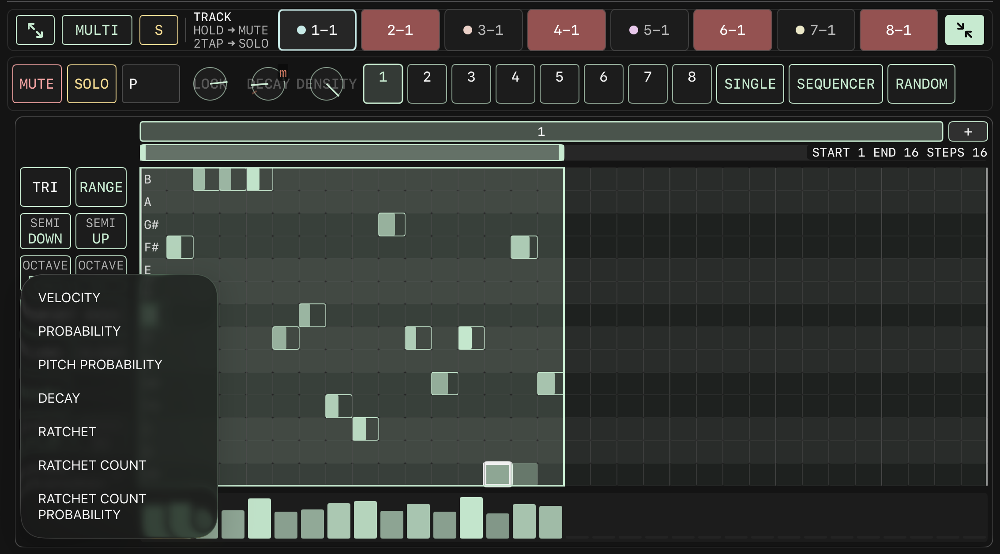
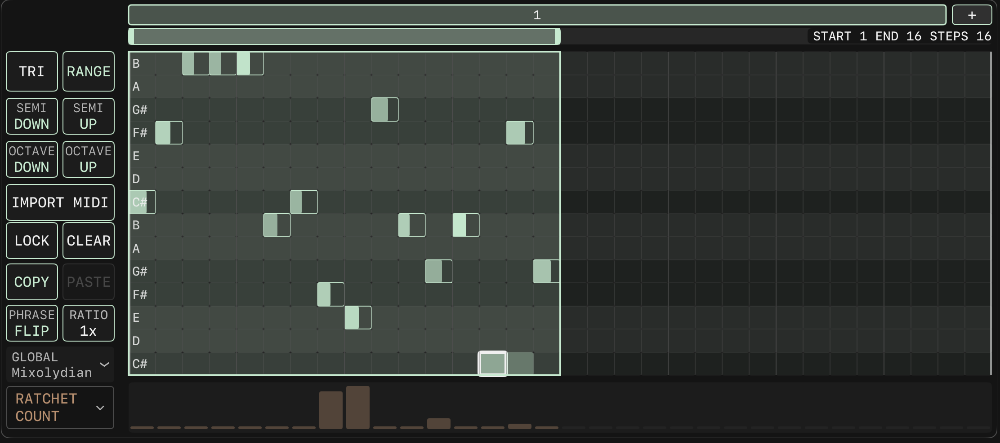
EDIT panel
The bottom row of the left button column is split in two: the lane dropdown on the left half, an EDIT button on the right half. All eight tracks have it. EDIT opens a tall parameter editor: the note grid above shrinks to half its height and the editor takes the space below. Pressing EDIT again collapses it and the grid returns to full height. The lane dropdown still works while EDIT is open, so the editor follows whichever parameter is selected.
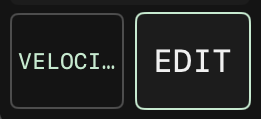
On TRACK 1 to 4 the editor is the same lane as before, only taller; the gestures are unchanged, vertical drag and a one-finger horizontal sweep. A row at the top of the editor shows the full parameter name in the colour of that parameter. That row is a label only and does not respond to touch: the dropdown is now half width and may shorten its own wording, while this row always spells the name out in full.
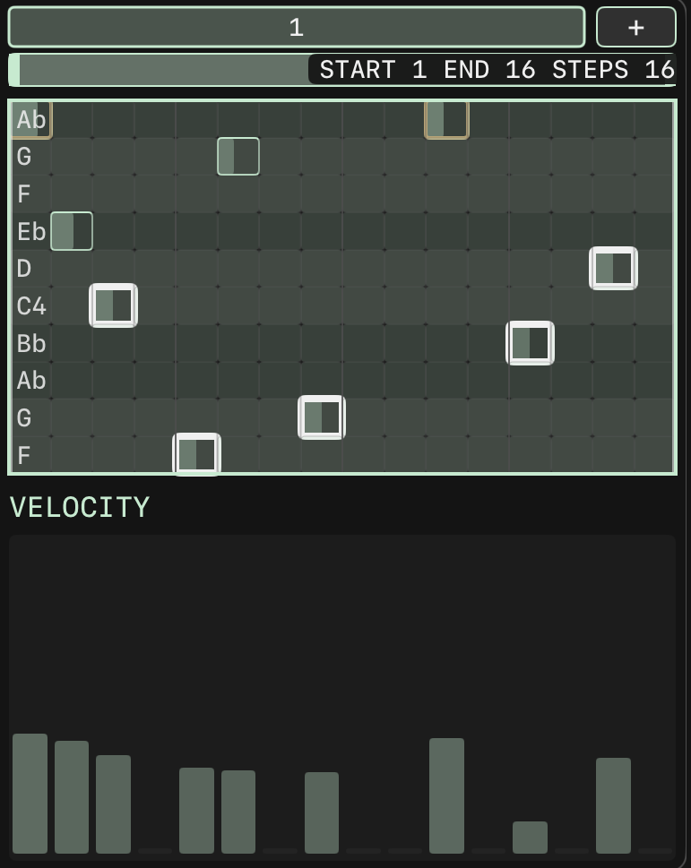
TRI triplet grid
- TRI only switches the grid used for display and editing. Straight notes and triplet notes are two separate sets of data; both play whether TRI is on or off.
- On melody tracks, TRI applies only to the current track and is kept per track. The TRI state is not saved; it is off after the app restarts.
- With TRI on, a bar changes from 16 columns to 24 columns: every two straight steps are divided into three cells. The first cell of each group is the same note as the even straight step.
- With TRI on, notes on odd straight steps are shown at their original time position with a faded dashed frame and cannot be edited. With TRI off, triplet notes are shown with a faded dashed frame and cannot be edited.
- Lanes available on triplet cells: VELOCITY, PROBABILITY, DECAY. PITCH PROBABILITY and the three RATCHET lanes do not apply to triplets; the lane shows "NOT AVAILABLE ON TRIPLET" at its top right, and the straight columns can still be edited.
- A new triplet note has velocity 100 and is locked on creation.
- Triplet notes are not affected by SWING and have no random pitch or retrigger. They are also silent under MUTE, SOLO and when DENSITY is 0.
- Generation neither creates nor clears triplet notes. Deleting a bar deletes its triplets as well.
- Triplets are stored with the segment and included in .honki files; files from older versions still load.
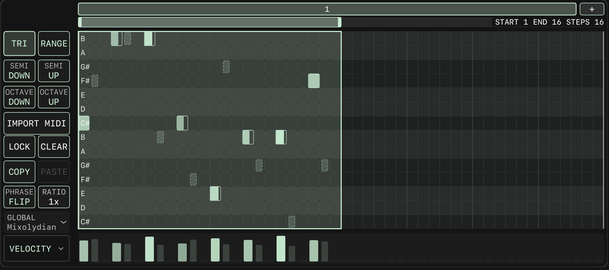
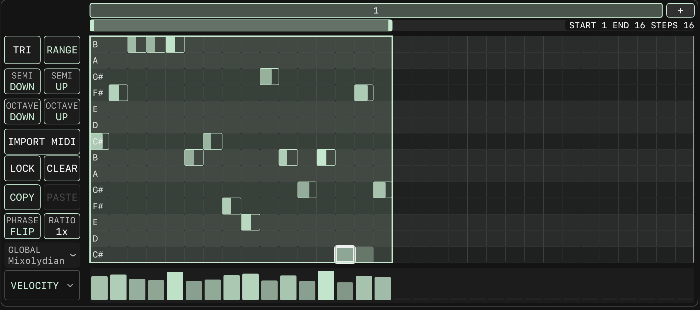
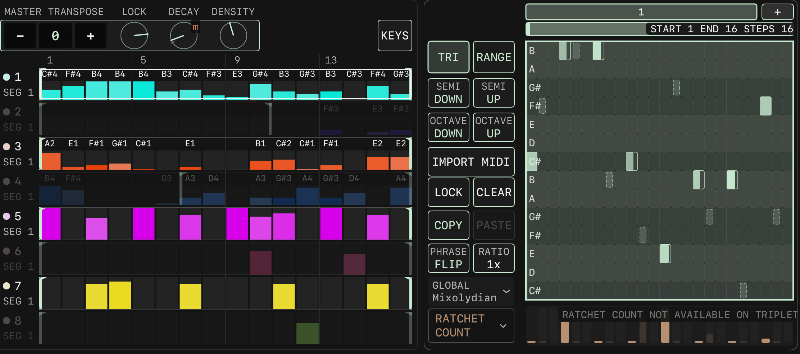
Note grid gestures
- Rows are the scale notes within the pitch range; note width is gate and opacity is velocity.
- Notes outside the scale show a 2pt warning frame; locked notes show a 4pt frame.
- Tap an empty cell to create a note (velocity 100, gate 0.5), locked on creation. Tap a note to delete it; the lock state is kept.
- Drag vertically more than 8pt to change pitch; drag horizontally to change gate (0.01 to 16). Up to 4 fingers at once. A drag that starts on an empty cell does not create a note.
- Notes across bars: stretch a note to the right edge, hold until the page turns, and keep stretching on the next page. For a long note that starts on the previous page, the part that extends into this page is drawn from the left edge in a lighter colour.
- In LOCK mode, notes can only be tapped to toggle their lock.
Manually entered notes are locked by default and are not affected by the LOCK knob or by generation. Locked notes are cleared only by choosing Y after CLEAR.
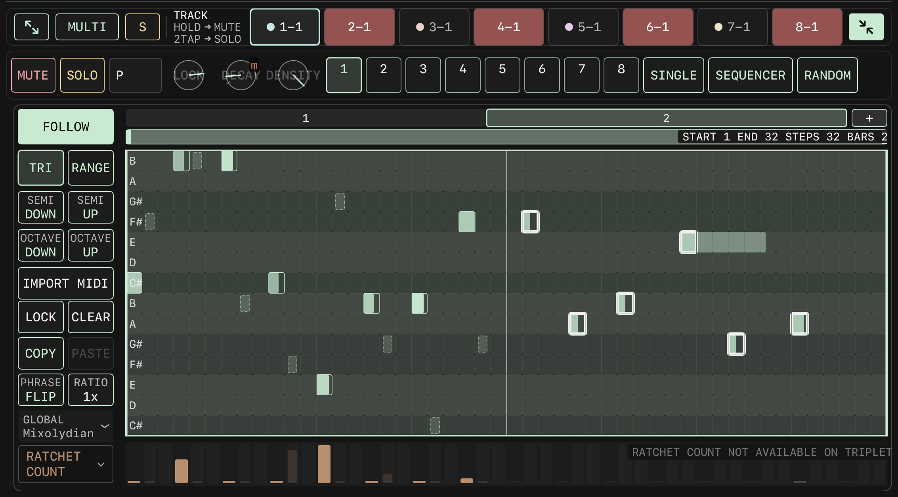
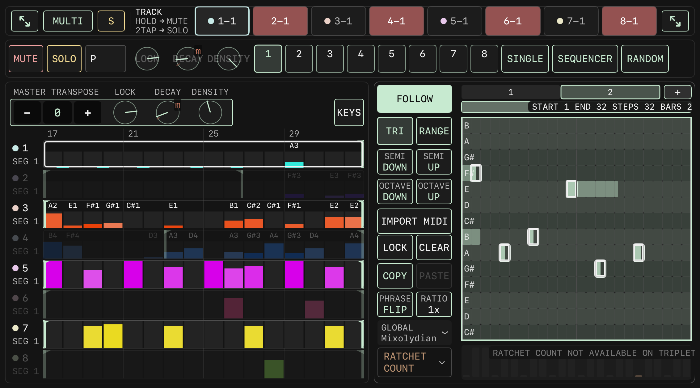
DRUMS editor (TRACK 5 to 8)
| Group order | Top to bottom: TRACK 8 LEAD, 7 TIMELINE, 6 GROOVE, 5 FOUNDATION. |
| Voice rows | TRACK 5: Kick, Low Tom; TRACK 6: Snare, Mid Tom, Clap; TRACK 7: HH Closed, HH Open; TRACK 8: High Tom, Crash. Names change with STYLE. |
| Pages | The four tracks share bar pages. Full screen shows two bars at once, and edge page turning moves two bars at a time. |
| Left sliders | VARIATION, REST, GHOST, ACCENT, FILL, each 0 to 1, applied to the target tracks. |
| Target tracks | Each slider has a 2x2 grid beside it for selecting TRACK 5 to 8. Popover title TARGET TRACK; at least one track remains selected. |
| LOCK | Toggles lock mode. |
| CLEAR | First asks WHICH TRACK? (ALL / 8 / 7 / 6 / 5), then CLEAR LOCK? Y / N. N clears only unlocked notes, including triplets; Y clears everything. |
| COPY / PASTE | Copies and pastes the four tracks as one set. Triplet notes are copied as well. |
| RATIO | A single button across the row. The right of the button face shows the value shared by the four tracks, or MIXED when they differ. Popover title "RATIO TRACK n": four track buttons 5, 6, 7, 8 on the left, each showing the current value of that track; 15 ratios on the right. The popover stays open after choosing a ratio, so other tracks can be set next; tap outside to close. |
| TRI | A single button across the row that switches the four tracks together. Pressing it when any track is off turns all four on; pressing it when all four are on turns them all off. It lights only when all four are on. The grid rules are the same as on melody tracks. |
| Lane dropdown | On the left half of the bottom row of the button column. Six items: VELOCITY, PROBABILITY, DECAY, RATCHET, RATCHET COUNT, RATCHET COUNT PROBABILITY, with the same value definitions as on melody tracks. On drum tracks, DECAY and the three RATCHET values are shared by all voices on the same step. Triplet cells can use only VELOCITY, PROBABILITY and DECAY. |
| EDIT | On the right half of the same row, beside the lane dropdown. Opens the parameter editor. See "EDIT panel on drum tracks" below. |
| Style band | One per group; select GLOBAL or a specific style. Can be assigned with MIDI Learn. |
Drum grid gestures: tap to toggle a hit (velocity 100); drag vertically more than 8pt to change the value of the current lane; swipe horizontally to paint continuously; in LOCK mode, tap to toggle the lock. The drum grid has no gestures for pitch or note length. Manually entered triplet hits are locked on creation.
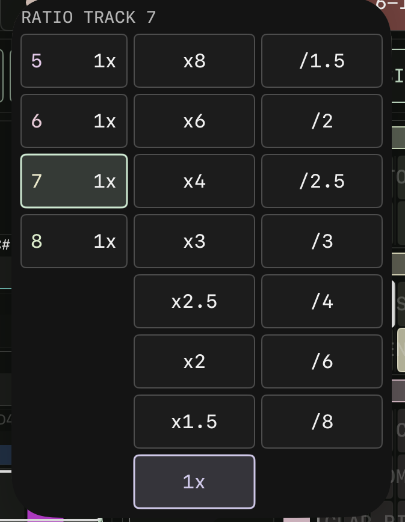
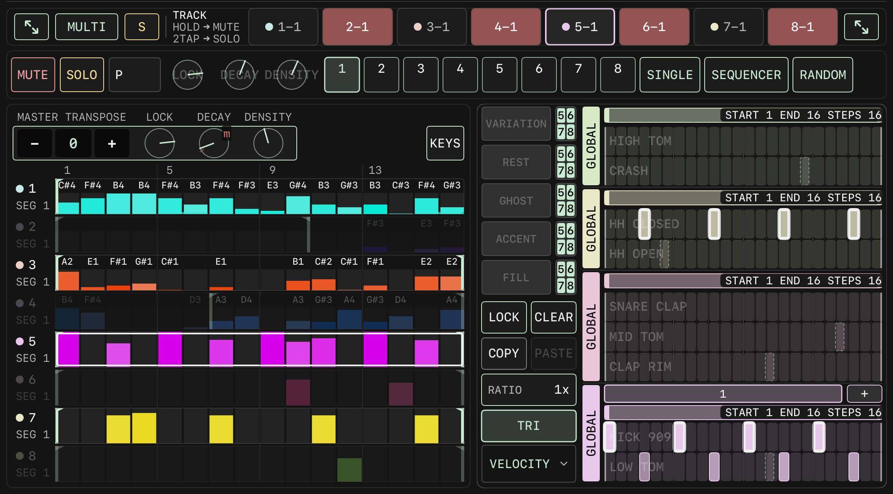
EDIT panel on drum tracks
With EDIT on, the right side shows only the group of the currently selected track, and its voice rows become taller. The lower half becomes an editing area that alternates one block per voice: the name of the first voice with the name of the current parameter beside it, then the parameter row of that voice, then the name of the second voice and its parameter row, and so on down. The columns of the editing area line up with the columns of the grid above.
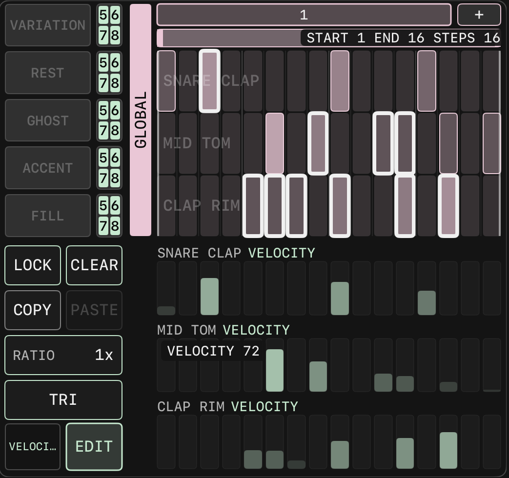
Each column of a parameter row is one bar whose height is the current value. Touching a column sets the value to the height of the finger: the top of the row is the maximum, the bottom is the minimum. This is an absolute position, not a relative drag, so the value goes to wherever the finger lands. The value is shown at the top left of the row while dragging and disappears when the finger is lifted. Up to 4 fingers can drag different columns at once. Steps with no hit stay empty; dragging never creates a note. Columns outside the play window or outside the loop range are drawn dimmer.
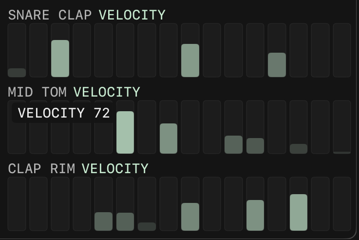
RATCHET, RATCHET COUNT and RATCHET COUNT PROBABILITY do not apply to triplets. With the triplet grid on, the triplet columns of these three parameters are drawn as disabled slots and do not respond to touch; the straight columns still work. VELOCITY, PROBABILITY and DECAY can be edited on triplet columns as well.
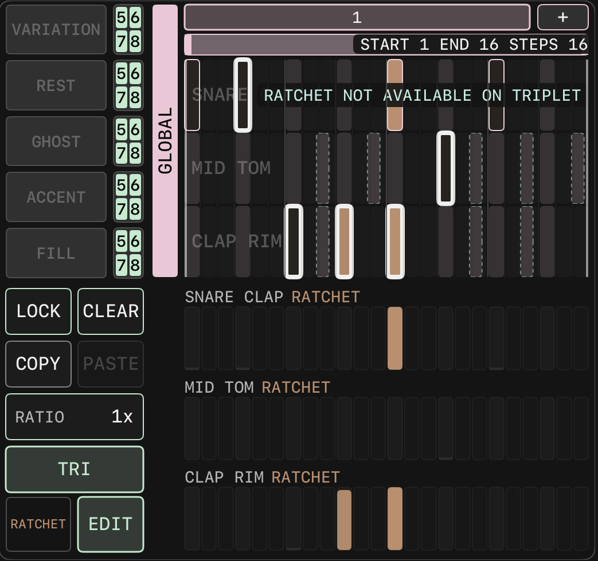
The bars in the EDIT rows and the vertical drag on the grid cells write the same values; either way the same data is changed. The grid cells keep their relative drag, and only the EDIT rows use absolute position.
KEYS mode

| OCTAVE - / + | Shifts the octave shown on the keyboard. |
| Status | STEP n/m, PLAYING, RECORDING, AUDITION. |
| REST | Enters a rest during step recording. |
| RECORD | Toggles recording. |
| Keyboard | Monophonic. Unavailable on drum tracks, where a hint text is shown. |
When KEYS is on and playback is stopped, the note grid on the right shows a vertical line at the cell of the step entry position. Keyboard step entry writes straight notes only.
5. VOICE

Header and track cells

| Source buttons | SYNTH, SAMPLE, PHYSICAL, AU. One of four. |
| TRACK cells | Show the track name and source. M mutes; S solos, hold 0.4 seconds for exclusive solo. State is shared with MIXER. When switching tracks, another track in RECORD stops. |
| SEGMENT 1 to 8 | Selects the segment to edit. Segments with a sound memory show a dot. |
| DECAY | DECAY of the current track, same as on MAIN. |
| CLEAR | Clears the sound memory of the current segment. |
| SAVE | Stores the current panel parameters (including the harmonic settings) into the segment memory. |
Panel editing rule: when the current segment has a memory, the panel edits the memory; when it has none, the panel edits the track base. Sample loading or recording, the PHYSICAL MODEL and POLYPHONY, and AU loading always apply to the track base. SLICE and MULTI are track-level settings and are mutually exclusive. While editing a segment memory, the panel shows an "EDITING SEGMENT n MEMORY" watermark.
NOTE HARMONIC (sources other than SAMPLE)
| HARM | Toggles harmony. |
| AUTO | Selects the chord type automatically; TYPE is dimmed while on. |
| TYPE | Tap to cycle the chord type. |
| VOICE | CLSE, DRP2, DRP3, OPEN. |
| INV | ROOT, 1ST, 2ND, 3RD. |
| 3RD / 5TH / 7TH | Knobs, each 0 to 1. Can be recorded with MOTION and routed with MOD ROUTE. |
SYNTH
TRACK 1 to 5 are wavetable synthesizers, titled "OSCILLATOR WAVETABLE"; TRACK 5 is titled "KICK VOICE WAVETABLE". TRACK 6 to 8 are fixed drum synthesizers; the panel shows "BUILT-IN DRUM SYNTHESIZER WITH FIXED SOUNDS FOR THIS TRACK.".
| Oscillator | The carrier oscillator reads the wavetable directly; the PM modulator reads the same frame of the same table. With no wavetable loaded the oscillator runs as a pure sine. |
| Waveform display | Shows the frame of the current wavetable at the current POSITION. When POSITION is modulated by MOTION, MIDI or PERFORM, the display follows the modulated value in real time. |
| POSITION | Knob to the right of the waveform display. 0 to 1, default 0. Morph position between frames with linear interpolation: the leftmost position (frame 0) is a pure sine, turning right morphs into the frames of the file. Carrier and modulator follow together. Can be recorded with MOTION. Disabled and dimmed while BYPASS is on or no wavetable is loaded. |
| BYPASS | TRACK 5 only. While on, FOLD, FEEDBACK, TONE and MODULATION have no effect and the frame size menu is locked. |
| PREVIOUS / NEXT | Switches to the previous or next wavetable. |
| Name button | Opens the "SELECT WAVETABLE" popover, with a filter field and a "NO WAVETABLE" entry. |
| CLEAR | Removes the wavetable; the oscillator returns to a pure sine. |
| Frame size | Menu labelled "N PTS": 256 / 512 / 1024 / 2048 / 4096, default 2048. Sets the window length used when decoding the file; the table is then resampled to 2048 points per frame. Wavetables with a single cycle shorter than 2048 points need a smaller size to correct the pitch. Changing it reloads the table for that track. |
| Status text | With no wavetable: "NO WAVETABLE" and that the oscillator runs as a pure sine, with the number of available tables. With a wavetable: table index, frame count, frame size and the current frame (frame 1.0 is the sine). |
| OCT | -4 to +4. |
| TUNE | Plus or minus 100 cents. |
| SWEEP | 0 to 1000 Hz; on TRACK 5 an offset of -500 to +500. |
| FOLD | 0 to 10. |
| FEEDBACK | 0 to 1. |
| TONE | 0 to 10. |
| MODULATION | 0 to 10. At 0 the wavetable has no effect. |
| MOD ENV | 0 to 10; on TRACK 5 -5 to +5. |
A wavetable holds up to 32 frames including the sine at frame 0; file frames start at 1, and longer files are sampled evenly, always keeping the first and last frame. TRACK 5 follows the STYLE defaults for FOLD, TONE, FEEDBACK and MODULATION until the user touches a parameter.
SAMPLE

File row
| LOAD SAMPLE | Loads a single sample (normal and SLICE modes). |
| RECORD / STOP | Records the master output as a sample, up to 120 seconds, showing "RECORDING x.x s" while recording. Loads automatically after stopping. |
| File name | Shows the current sample file name, or "NO SAMPLE" when there is none. |
| LOAD FOLDER | Loads a whole folder in MULTI mode. Supports wav, aif, aiff, mp3, m4a, caf, flac, up to 36 files. |
| ONE SHOT / LOOP | Switches the playback mode. |
| REVERSE | Reverse playback. |
| SLICE | Divides the sample into N equal slices; notes from C1 (24) upward map to the slices. Drum tracks show "DRUM TRACK: SLICE FOLLOWS SETUP MIDI NOTE". |
| MULTI | Multi-sample pad mode, available on all 8 tracks. |
| - n + | Slot count in MULTI (1 to 36), slice count in SLICE (2 to 36). Fixed on drum tracks, shown as "PADS n". |
Normal and SLICE modes
| Waveform | The S / E markers set the start and end points; two fingers can drag both at once. In SLICE mode the slice boundaries are shown. The MOTION of the start and end points is cleared in MOD mode: turn on MOD in the Transport, tap the waveform, and answer Y to CLEAR MOTION? in the panel. |
| GRAIN SIZE x DENSITY | Main granular synthesis XY pad. GRAIN SIZE 0.005 to 2 seconds; DENSITY 1 to 200 per second, 1 is normal playback. Each axis has - / + and a lock. |
| SPRAY x JITTER | Granular synthesis detail XY pad, each 0 to 100%. |
| GRAIN SHAPE | 0 to 100%. |
| PITCH | Plus or minus 48 semitones. |
| GAIN | 0 to 8. |
MULTI mode
| Pads | 16 per page, up to 3 pages for 36 in total. The first slot is at bottom left. Labels are note names (from C1) or drum voice names. Pressing a pad selects it and auditions it. |
| Drum track pad count | Fixed: TRACK 5 has 2, 6 has 3, 7 has 2, 8 has 2. The panel shows "PAD PER LANE. SETUP MIDI NOTE NOT USED". |
| PAGE 1 / 2 / 3 | Switches the pad page. |
| LOAD / CLEAR | Loads or clears the sample of the current slot. |
| LEVEL | 0 to 2. |
| PITCH | Plus or minus 24 semitones. |
| FILTER | BYPASS, LP n%, HP n%. |
| RESO knob | To the right of FILTER, 0 to 100%. |
| PAN | TRACK 1 to 4 show MONO. |
| Waveform | Shown per slot. |
| LAUNCH | TRIGGER, GATE, LOOP, REVERSE; drum tracks have only TRIGGER and REVERSE. |
| CHOKE | OFF, A, B, C, D. |
Pad parameters do not support MOTION or MIDI Learn.
PHYSICAL
| XY 1 | BRIGHTNESS x DAMPING, each 0 to 100%, with - / + and axis locks. |
| XY 2 | POSITION x STRUCTURE, each 0 to 100%, with - / + and axis locks. |
| MODEL | MODAL, SYM STR, STRING, FM, QUANT, STR&REV. |
| POLYPHONY | 1 / 2 / 4 VOICE. |
| OCT | Octave. |
| TUNE | Fine tune, double-tap returns to 0. |
| EXT to AUDIO IN | ON / OFF, default ON: the external input excites the resonator and is not mixed in dry. |
AU
| Not loaded | Shows "NO INSTRUMENT LOADED" and LOAD. |
| Loading | Shows "LOADING" and CANCEL. |
| Loaded | Shows the name with CHANGE, OPEN EDITOR, UNLOAD. |
| OPEN EDITOR | Opens the AU's own interface in full screen, with CLOSE at the top. |
| List popover | Titled "INSTALLED AUDIO UNIT INSTRUMENTS", grouped by vendor, with FILTER BY NAME at the top. |
The AU runs in a separate process and is silent until loading completes.
| MACRO KNOBS 1 to 8 | Arranged 4x2. Hold 0.6 seconds or tap an unbound knob to start binding; tap the name to open the "MACRO n PARAMETER" popover, which contains CLEAR BINDING. Unbound knobs show ASSIGN PARAMETER; when binding is not possible they show UNAVAILABLE. Bindings are stored in the bank and can be PERFORM targets. |
| GLIDE | Sends CC5 and CC65. |
| MOD | Sends CC1. |
| SUSTAIN | Sends CC64. |
The GLIDE, MOD and SUSTAIN values are kept only for the current session. They can be assigned with MIDI Learn.
6. MIXER

Strip

| Name | TRACK 1 to 4; drum tracks are FOUNDATION, GROOVE, TIMELINE, LEAD. |
| EQ thumbnail | Shows the EQ curve; tap to open the EQ popover. |
| FILTER | OFF at the centre; low-pass to the left (20 kHz down to 80 Hz), high-pass to the right (20 Hz up to 8 kHz). Snaps within 0.04 of the centre; double-tap to return to 0. |
| LOCK / DECAY / DENSITY | The same as the parameters of the same names in MAIN. |
| DELAY / REVERB / FX CHAIN | Three effect send amounts, each 0 to 1; double-tap to return to 0.5. Can be modulated with MOD ROUTE. |
| BUS select | Four buttons MASTER / A1 / A2 / A3 below the six-knob area, selecting the bus that the LEVEL fader currently edits. The selected button is shown filled in the track colour. This selection is not saved and returns to MASTER when the app restarts. With A1 to A3 selected, the LEVEL fader writes the send amount to that aux bus (0 to 2, default 0), and PAN and MIX are disabled; M / S are not affected. The aux signal is mono, tapped after COMPRESSOR and sidechain compression and before the fader and PAN, and does not pass through the effect returns or main output processing; TRACK 5 to 8 use the average of left and right. |
| A1 to A3 outputs | The physical channels of the three aux buses are assigned in the AUX BUS section of the AUDIO tab in SETUP. Unassigned is OFF; channels already used for other purposes are marked IN USE. |
| PAN | Equal-power pan on TRACK 1 to 4, left-right balance on 5 to 8. Snaps at the centre; double-tap to return to 0. Supports MOTION, MOD ROUTE and MIDI Learn. |
| MIX | Crossfade between EXT and INT; 0 is INT. |
| LEVEL | 0 to 2, default 1. The two meters beside it are pre-fader and post-fader; their source is the trigger envelope, not the audio. With BUS set to A1 to A3, it becomes the send amount to that aux bus. |
| M / S | M in red is mute; S in yellow is solo, and a 0.4-second long press is exclusive solo. |
Signal order: mute, EQ, FILTER, COMPRESSOR, sidechain compression, effect send points, aux tap, fader, PAN, main output. The send points of DELAY, REVERB and FX CHAIN can each be set to PRE or POST. Main output: effect returns (including FX CHAIN), main FILTER, MASTER VOLUME, soft clip.
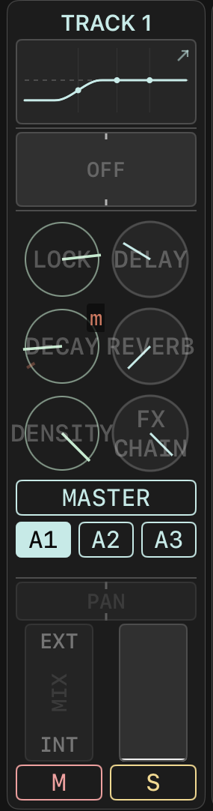
EQ popover

| RESET | Gain returns to 1.0, frequencies to 200 / 1000 / 4000 Hz. |
| EQ curve | Three points: LOW 40 to 500 Hz, MID 200 to 5000 Hz, HIGH 1000 to 16000 Hz. Gain 0 to 2. Up to 3 fingers can drag at once. |
| COMPRESSOR SPEED | 0 to 1, default 0.5. |
| COMPRESSOR AMOUNT | 0 to 1, default 0. |
| SIDECHAIN | Sidechain source drop-down; any of the other 7 tracks. |
| SIDECHAIN AMOUNT | Sidechain compression amount. |
| EXT IN GAIN | External input gain, -60 to +12 dB. |
EFFECT row
| DELAY PRE / POST | Switches the delay send point. |
| DELAY LEFT / RIGHT | The left half is free time from 5 ms to 5 s; the right half is 16 tempo-synced values (1/1 to 1/32, including dotted and triplet). |
| DELAY FEEDBACK | 0 to 0.95, default 0.35. |
| DELAY LEVEL | 0 to 1.5, default 0.8. |
| REVERB PRE / POST | Switches the reverb send point. |
| SIZE / DAMP / DECAY | Each 0 to 1, default 0.5. |
| REVERB LEVEL | 0 to 1.5, default 0.8. |
| FILTER | Main output filter knob. |
| Meters | L / R, two colours, -60 to 0 dBFS, peak hold 0.8 seconds. |
| MASTER VOLUME | 0 to 1. |
| Dot icon | Opens the FX CHAIN panel. Shown in the accent colour when the FX CHAIN send of any track is above 0 and the DRY WET of at least one position is above 0. |
| Three-line icon | Opens MASTER FX. |
FX CHAIN panel
FX CHAIN is a send effect chain with three positions; the signal passes through position 1, 2 and 3 in order. The panel title is FX CHAIN, with the subtitle "SIGNAL RUNS POSITION 1 TO 2 TO 3".
| SEND | "SEND: PRE" or "SEND: POST"; switches the send point. |
| RETURN | Return amount of the whole chain, 0 to 1.5, default 0.8. |
| Three positions | Three columns with the headers "INPUT INTO POSITION 1", "THEN POSITION 2" and "THEN POSITION 3 OUTPUT". |
| Effect menu | Each position selects one of GRANULAR, KARPLUS, GLITCH. There is no empty option and there are no move up / move down buttons; to change the order, choose different effects in the menus of the positions. The same effect can be placed in more than one position. |
| DRY WET | 0 to 1 per position. At 0, DRY is added to the column header, the column becomes semi-transparent, and that position does not process the signal. |
| Factory state | Position 1 is GRANULAR with DRY WET 1; position 2 is KARPLUS with DRY WET 0; position 3 is GLITCH with DRY WET 0. |
| Changing an effect | The parameters of that position return to their defaults, FREEZE turns off, and the existing MOTION data and MIDI bindings of that position are cleared; DRY WET is kept. The sound switches with a short fade out and fade in. |
Parameter bars show the name only. The parameters, DRY WET and RETURN support MOTION, MOD ROUTE and MIDI Learn; the effect menu, FREEZE and HOLD support MIDI Learn only. TEXTURE settings in older projects map to position 1.
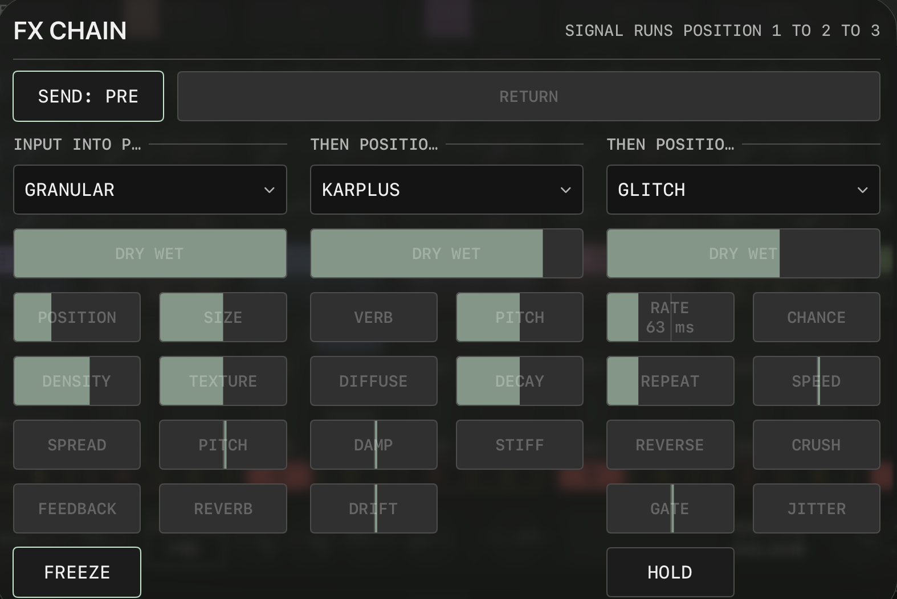
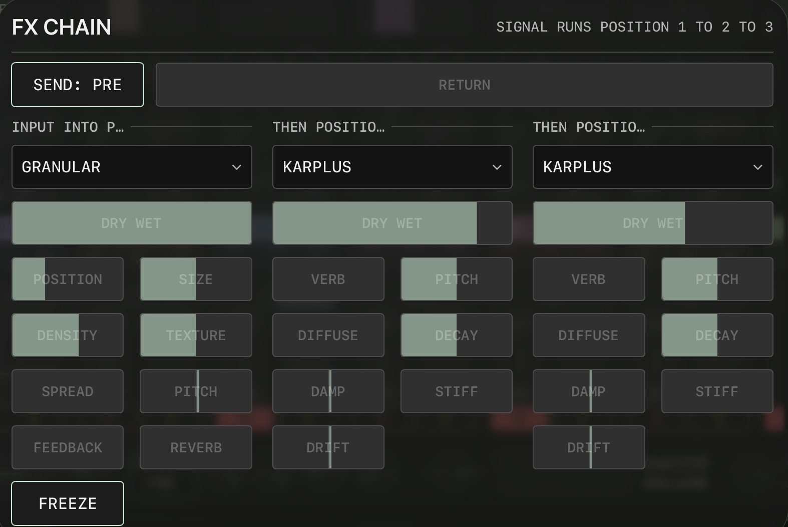
GRANULAR
| POSITION / SIZE | Read position and grain length of the granular engine. |
| DENSITY / TEXTURE | Grain density and texture. |
| SPREAD | Spread. |
| PITCH | ±24 semitones, 0 at the centre. |
| FEEDBACK / REVERB | Feedback and reverb amount. |
| FREEZE | ON / OFF. |
KARPLUS
Six coupled strings, three on the left and three on the right.
| VERB | At 0 the strings are independent; at 1 it approaches a reverb. |
| PITCH | String length. |
| DIFFUSE | Diffusion amount. |
| DECAY | 0.05 to 20 seconds; self-oscillates above 0.9. |
| DAMP | 0 at the centre; low-pass in the negative direction, high-pass in the positive direction. |
| STIFF | String dispersion. |
| DRIFT | 0 at the centre; pitch offset between the left and right channels, and random drift. |
GLITCH
A slice repeat effect.
| RATE | The left half is free time from 2 ms to 2 s; the right half is 16 tempo-synced values, the same as DELAY. The bar shows the time or the division name. |
| CHANCE | Probability of triggering a repeat. |
| REPEAT | Number of repeats, 1 to 16, default 5. |
| SPEED | 0 at the centre; 0.25x to 4x. |
| REVERSE | Probability of reverse playback. |
| CRUSH | Bit crush amount. |
| GATE | 0 at the centre. |
| JITTER | Timing jitter amount. |
| HOLD | Active only while held; not saved. |
MASTER FX
| Title | Shows "1 EFFECT" or "N EFFECTS". Shows "NO MASTER EFFECTS" when there are none. |
| Effect slots | Each slot has bypass, name, OPEN, move up, move down, and remove X. |
| ADD EFFECT | Lists the available Audio Unit effects grouped by manufacturer. |
7. UTILITY

SEQUENCER (8-stage envelope)

| DRAW | Page-wide toggle set into the top-left corner of the SEQUENCER panel. Press to turn on; the button then reads FINISH. Drawing mode does not end by itself after a stroke; it stays on until you press FINISH, and it is not kept when you leave the page. While on, you can draw freehand in the SEQUENCER curve area (sampled at the 8 breakpoint positions; stages the stroke did not reach keep their old level) and also draw waveforms on the three LFO pads. |
| A GROUP B | Switches the editing group between A and B. STAGES, START, LOOP and TRIGGER are shared by both groups; the curve, CURVE and SYNC are independent per group. |
| LOOP | Loop playback. When off, holds at the level of the last stage. |
| TRIGGER | Trigger mode. |
| STAGES | Stage count 1 to 8. |
| CROSSFADE | 0 to 1, the blend between A and B. |
| Editing area | The horizontal axis is time proportion, the vertical axis is 0 to 10 V. Drag a breakpoint vertically to change LEVEL, horizontally to change DURATION (0.001 to 10 seconds; the last stage can extend to 600 seconds). The start handle is at the far left. Up to 4 fingers at once. Shows the editing group as a solid line, the other group as a thin line, the blended result as a thick line, and the playback position. |
| CURVE | Eight knobs, each -1 to +1, double-tap returns to 0. Stages beyond STAGES are shown at 0.55 opacity and can still be adjusted. |
| SYNC | Eight buttons that switch a stage length to tempo sync, with 17 ratios from 1/16 to 16. |
LFO

| Slot buttons | The three slots switch between LFO 1 / 4, 2 / 5 and 3 / 6. LFOs not shown keep running. |
| HZ | 0.01 to 20 Hz, logarithmic, double-tap returns to 1 Hz. Can be recorded with MOTION. |
| SYNC | Tempo sync, 11 divisions from /16 to x16. |
| UNI / BI | Unipolar or bipolar output. |
| MORPH | 0 to 100%, - / + step by 1%. |
| SHAPE | -1 to +1, step 0.02. |
| Lock icon | Locks that axis. |
| XY pad | SHAPE horizontally, MORPH vertically. Double-tap resets to MORPH 0.5, SHAPE 0. The waveform display draws 72 points and the playback position, showing the actual modulated values. |
| Drawn waveform | With DRAW on, draw one stroke on the pad; lifting your finger writes it as that LFO's 128-point custom waveform (left to right is one cycle, top is +1, bottom is -1; gaps between drawn points are interpolated, the ends are extended with the nearest drawn value). Only the LFO currently shown in a slot can be drawn. With a custom waveform the LFO reads the table by phase, MORPH and SHAPE have no effect on the output, XY dragging is disabled, no crosshair is shown, and the display shows the custom waveform. The waveform is saved with the modulation settings. |
| S&H / T&H | With a custom waveform, the top row becomes a mode button and a step count. Tap the button to switch between S&H and T&H (default S&H); - / + change the step count by 1, from 0 to 32, and 0 shows OFF meaning no sample and hold. S&H holds the value read at the start of each step; T&H follows the waveform for the first half of each step and holds the mid-step value for the second half. Neither changes the drawn waveform itself. |
| RESET | With a custom waveform, the bottom row becomes RESET. Clears the custom waveform, returns the rows to MORPH / SHAPE and re-enables XY dragging. The step count and the S&H / T&H setting are kept. |
OUTPUT 1 to 4

| Faders | Order L1, L2, L3, SEQ, L4, L5, L6, each -1 to +1, snapping at center, double-tap returns to 0. |
| Scope area | Shows the output waveform and reading within plus or minus 10 V. Shows "CV OFFLINE" when the CV engine is not running; shows a flat 0 V line when no channel is assigned. |
| Output ranges | Matrix plus or minus 10 V, SEQ 0 to 10 V, LFO plus or minus 5 V. |
The iPad CV engine must be enabled in SETUP. The physical channel of each OUTPUT is assigned in the MOD OUTPUT section of SETUP.
8. PERFORM

Toolbar

| PERFORM / EDIT | Switches between perform mode and edit mode. |
| SEQ, LFO 1 to 3 | Live levels of the modulation sources. |
| MASTER | Main output spectrum. Tap to open the MASTER SPECTRUM panel. |
| CONTROLS / MAPPINGS | The number of controls and mappings on the canvas. |
MASTER SPECTRUM panel
| Spectrum | An enlarged main output spectrum with the legend LEFT, RIGHT, REFERENCE. Hold to read the frequency at that position; a short tap closes the panel. Switching PERFORM / EDIT also closes it. |
| LOAD REFERENCE FILE | Opens the system file picker to choose an audio file as a reference. Shows "ANALYSING REFERENCE FILE" during analysis and the file name when done; shows "REFERENCE FILE FAILED TO LOAD" on failure. Shows "NO REFERENCE FILE LOADED" when none is loaded. |
| Reference line | The loudest section of the file is analysed and drawn as a static accent-colour curve over the spectrum; it is also shown on the MASTER spectrum in the toolbar. The reference line and file name are kept and remain after the app restarts. |
| CLEAR REFERENCE | Clears the reference line. |
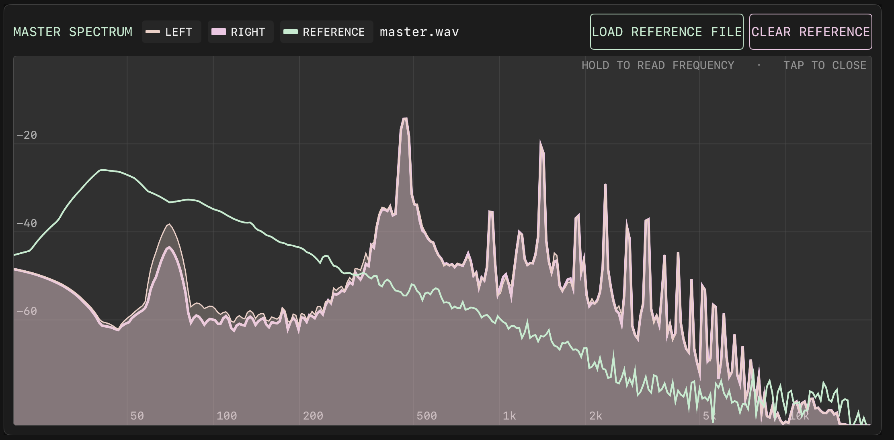
Controls
| KNOB | Knob. |
| BUTTON | LATCH or MOMENTARY. |
| FADER | VERTICAL or HORIZONTAL. A return SPRING can be set: OFF, MIN, CENTER, MAX. |
| PAD (TWO AXIS) | Two-axis mode. X and Y each have - / + buttons and a lock icon. A locked axis does not accept finger drags or - / +; MOTION, MOD ROUTE and MIDI are not affected by the lock. The return spring is set with SPRING X and SPRING Y in the MAPPING panel (OFF, MIN, CENTER, MAX) and is off when the pad is added. |
| PAD (FOUR WAY) | Four-way mode. The whole pad is a touch surface with no - / + and no lock, a crosshair at the centre, and the target name of each direction shown on the four sides. With the finger at the centre all four directions are 0; pushing to the edge in a direction gives 1; on a diagonal, horizontal and vertical are calculated separately. Button-type targets trigger when pushed past halfway. The return spring has a single switch, SPRING TO CENTER. |
| Indicator dots | The number of small dots below each control is its number of mappings, up to 8. |
The canvas of a new project is empty, with no default controls. When there are no controls, an empty-state hint and an ENTER EDIT MODE button are shown. The 30 controls in the image are the layout at the time of the screenshot.
Side panel

| MIXER | T1 to T8 each have a meter, VOL (0 to 2), M, S (long press for exclusive solo) and an 8-cell segment bar with the play position. Tap a cell to select that segment and lock the track to it; tap again to release. VOL, M and S on this page can be assigned with MIDI Learn and do not support MOD ROUTE. |
| UTILITY | The first row has the CROSSFADE bar, LOOP and TRIG. The curve area edits group A only, with group B shown as a faded line. One row each for LFO 1 to 6: SPEED bar (Hz when SYNC is off, tempo divisions when on), SYNC, UNI / BI. SHAPE and MORPH are display only on this page. SPEED supports MIDI Learn, MOTION and MOD ROUTE. |
| EFFECT | DELAY TIME LEFT, TIME RIGHT, FEEDBACK, LEVEL; REVERB SIZE, DAMP, DECAY, LEVEL. |
| FX CHAIN | Each of the three positions shows POSITION n and the effect name, DRY WET and the parameters of that effect; GRANULAR also has FREEZE and GLITCH also has HOLD. The effect type cannot be changed on this page and there is no RETURN; effects are changed in the FX CHAIN panel of MIXER. |
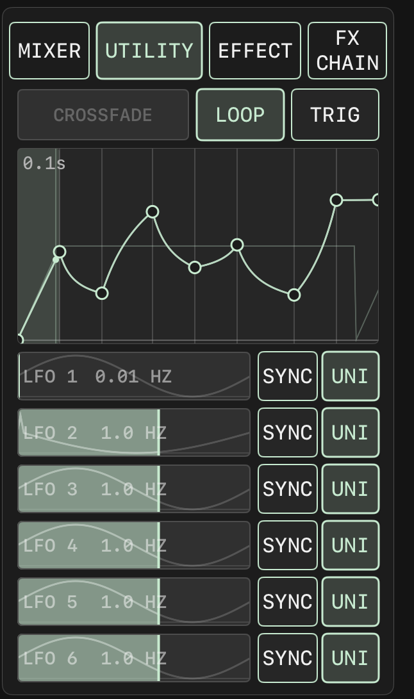
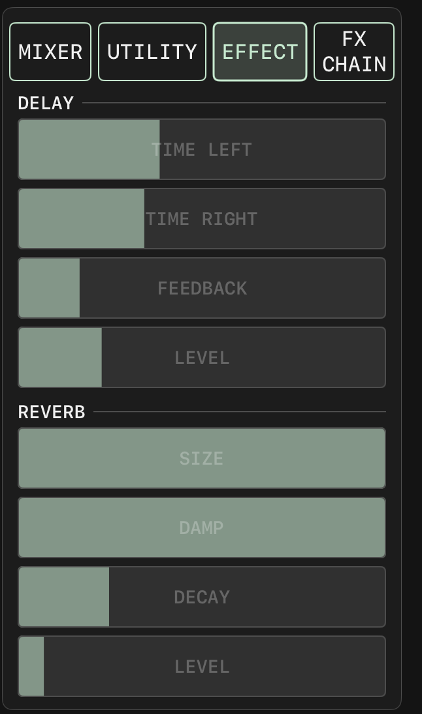
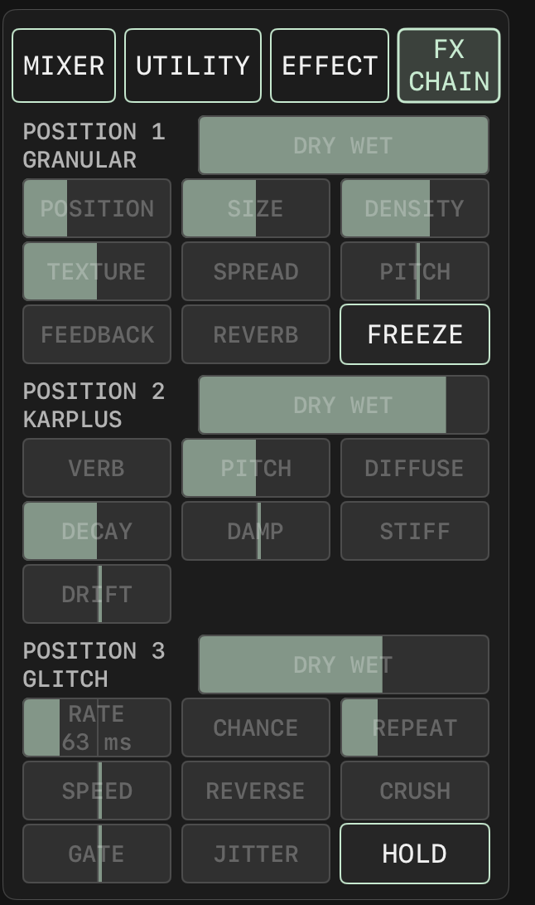
EDIT mode
| + KNOB / + BUTTON / + FADER / + PAD | Adds a control. + PAD adds a PAD in two-axis mode. |
| MAPPING | Opens the mapping panel. Available only when a single control is selected; double-tapping a control on the canvas also opens it. |
| DELETE | Two-stage: one press changes it to "DELETE?", and a second press within 2 seconds deletes the selected controls. |
| UNDO / REDO | For layout editing only, 32 steps. |
| TEMPLATE | Three built-in layouts: SEGMENT VOICE, LEVEL AND TRIGGER, SENDS. "SAVE CURRENT LAYOUT" saves the current layout; "MANAGE USER TEMPLATES" renames or deletes user layouts, and deletion asks for confirmation. |
| SNAP GRID | Grid snap switch. |
| Select and drag | Tap a control to add it to or remove it from the selection; multiple selection is possible. Drag to move; with multiple selection the whole group moves. |
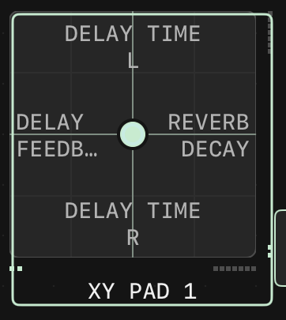
MAPPING panel
| Header | The MAPPING title, the control kind, the name field and CLOSE; tapping the panel background also closes it. BUTTON has MODE (MOMENTARY / LATCH); FADER has ORIENTATION (VERTICAL / HORIZONTAL) and SPRING; PAD has TWO AXIS / FOUR WAY and the spring settings. |
| Mapping slots | The left column SLOTS, 8 per control. Each slot has the target name, CLEAR SLOT, REVERSE RANGE, a range bar and a bar for the current effective value. On a two-axis PAD the 8 slots are shared by both axes, and the X / Y buttons of each slot choose the axis. |
| DIRECTIONS | On a four-way PAD the column becomes four rows, UP, DOWN, LEFT, RIGHT, with one mapping per direction; assigning again replaces the previous one, and an unassigned direction shows EMPTY. Each row has CLEAR DIRECTION, REVERSE RANGE and a range bar. |
| TWO AXIS / FOUR WAY | Switches the PAD mode. When the PAD already has mappings, the first tap shows a confirmation label and a second tap within 2 seconds switches. Switching clears all mappings of the PAD and can be reverted with UNDO; the name is kept. Switching to FOUR WAY returns the value to the centre and turns the spring on; switching back to TWO AXIS turns the spring off. |
| Target groups | MIXER, VOICE, SEGMENT, FX, GLOBAL, CHROMA, PARTICLE, MESH, FEEDBACK. Below the groups are the track buttons T1 to T8, which are dimmed for global groups. Targets already used on the same control are marked. |
| MIXER group | Per track: MUTE, SOLO, A1 to A3 LEVEL, LEVEL, MIX, PAN, sidechain amount, the three effect sends, FILTER. |
| FX group | DELAY, REVERB, FX CHAIN (RETURN), FX CHAIN 1, FX CHAIN 2, FX CHAIN 3 and PRE / POST. Each FX CHAIN position contains the parameters of the three effects, MIX, and EFFECT, FREEZE and HOLD. Each trigger of EFFECT changes to the next effect in the order GRANULAR, KARPLUS, GLITCH; HOLD is active while held. |
A KNOB cannot select SEQUENCER, RANDOM or the PRE / POST switches. Mappings have no modulation amount field; modulation amounts are set in MOD ROUTE: turn on MOD in the Transport, then tap the control. MOD ROUTE on PERFORM controls has only 7 sources, SEQ and LFO 1 to 6; ENV is unavailable. On two-axis and four-way PADs, each of the two axes has its own set of modulation amounts. All control kinds can be assigned with MIDI Learn; the label shows the CC number, N number or PB, and takeover uses pickup. In MIDI Learn mode a PAD shows two corners: the top-left corner is the vertical axis and the bottom-right corner is the horizontal axis.
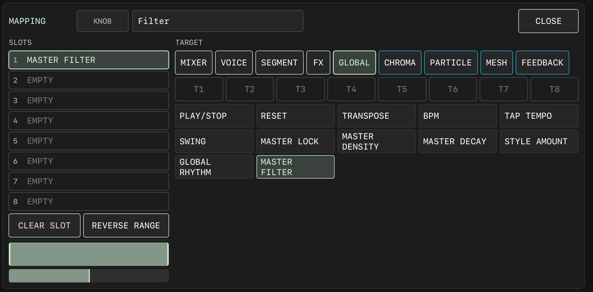
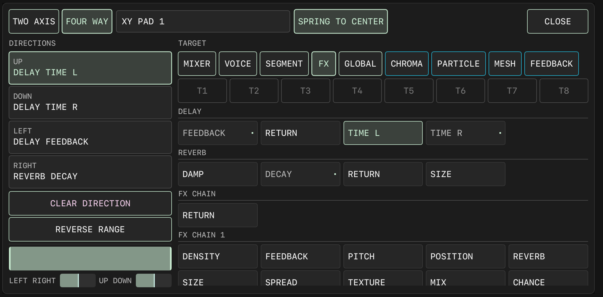
9. MOD ROUTE
MOD ROUTE lets one parameter receive several modulation sources at once. While a finger is on a control, the manual value replaces MOTION playback; MOD ROUTE keeps working and is added to MOTION. MOD ROUTE keeps working when playback is stopped.
Opening
- Press MOD in the Transport to enter MOD mode. Controls that can be modulated show a solid accent outline.
- Tap an outlined control to open the MOD ROUTE panel of that parameter, with haptic feedback. The value of the control does not change.
- Press MOD again to leave. MOD mode and MIDI Learn mode are mutually exclusive; MOD is off every time the app launches.
The long-press method of older versions has been removed.
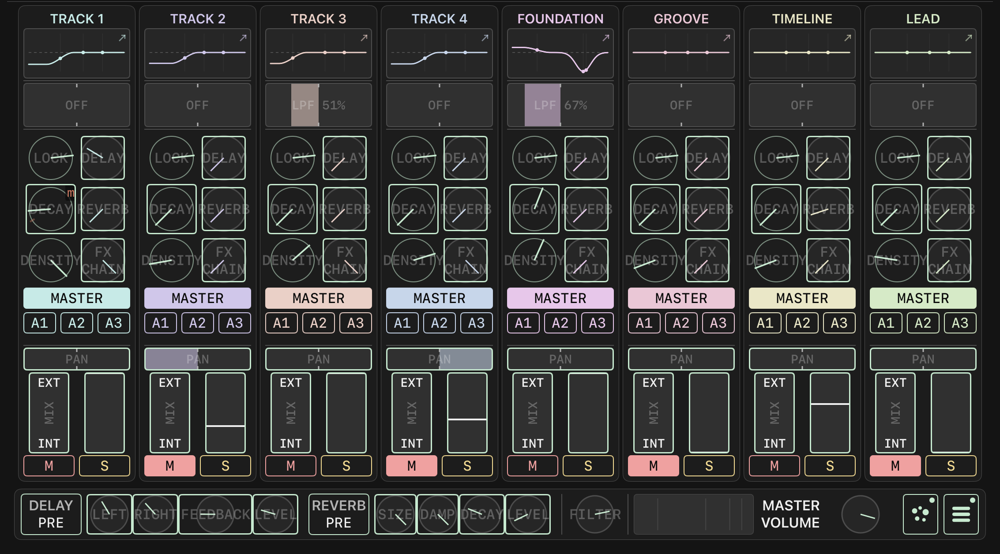
Where modulation is available
- DECAY in the MAIN parameter row.
- VOICE source parameters, and the sample start point, end point and GRAIN SHAPE.
- MIXER per track: DELAY, REVERB and FX CHAIN sends, sidechain amount, PAN, MIX, LEVEL, and the A1 to A3 send amounts. FILTER, LOCK, DENSITY, M, S and DECAY on the MIXER page are not supported.
- MIXER EFFECT row: DELAY LEFT, RIGHT, FEEDBACK, LEVEL; REVERB SIZE, DAMP, DECAY, LEVEL; FX CHAIN RETURN, the parameters of each position and DRY WET.
- UTILITY LFO speed and the XY pad.
- All controls on the PERFORM canvas; the bars of the side panel EFFECT and FX CHAIN pages, and LFO SPEED on the UTILITY tab. VOL on the side panel MIXER page is not supported.
- VISUAL MIX and parameter bars.
Panel
| Title | MOD ROUTE; the axis name is added for the XY pad. |
| Source buttons | 16 in four rows: OFF, SEQ, LFO 1 to 6, ENV 1 to 8. OFF clears everything. |
| Button logic | Tapping a selected source with a non-zero amount: the amount returns to 0 and the source stays selected. Selected with amount 0: set to +50%. Unselected with a non-zero amount: selected. Unselected with amount 0: selected and set to +50%. |
| AMOUNT | -100 to +100%. The title shows "source name AMOUNT", or "SELECT A SOURCE" when no source is selected. |
| CLEAR MOTION? | A Y / N row shown when the parameter has MOTION data. |
| Closing | Tap outside the panel, answer Y / N, or turn MOD off. MOD mode stays on after the panel closes. |
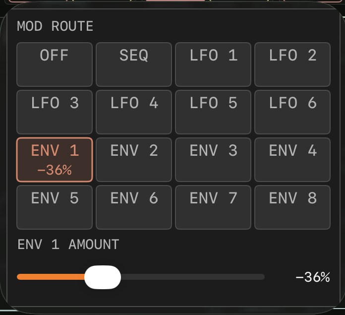
Sources
| SEQ | UTILITY envelope output, 0 to 1. |
| LFO 1 to 6 | Unipolar or bipolar according to the UNI / BI setting. |
| ENV 1 to 8 | The trigger envelope of each track, 0 to 1, read according to the current source of that track (SYNTH, SAMPLE, PHYSICAL, AU). A track may modulate its own parameters. ENV is not a column of the UTILITY OUTPUT matrix. ENV is unavailable on PERFORM controls, where the buttons are dimmed. |
A parameter with routing shows source marks at its top right: m for MOTION, s for SEQ, 1 to 6 for LFO, e1 to e8 for ENV; with too many sources the list is truncated with "+".
Relation to MIDI Learn
- MOD and MIDI cannot be on at the same time; turning one on turns the other off.
- MIDI bindings can only be removed in SETUP; learning again replaces the old binding.
10. VISUAL

SOURCE row and station rows

| SOURCE / ALWAYS ON | Source status text. |
| Source menu | CAMERA, PHOTO, VIDEO. |
| Lens menu | Selects the camera device; shows NO CAMERA FOUND when there is none. The camera runs at 1080p 30 fps; the front camera is mirrored. |
| PHOTOS / FILES | Shown for the PHOTO and VIDEO sources; loads from the photo library or from files. After loading the file name is shown; on failure LOAD FAILED. Photos are limited to 1920 on the long edge; videos loop and are muted. |
| FLIP H / FLIP V | Horizontal and vertical flip. |
| Resolution | Shows the source resolution; shows SOURCE WAITING while not ready. |
| Station rows | The four stations CHROMASCOPE, PARTICLE, MESH, FEEDBACK; drag the handle on the left to reorder. ON / OFF toggle; only CHROMASCOPE is on by default. With all stations off, the raw source is output. |
| MIX | 0 to 1, default 0.75 for CHROMASCOPE and 1 for the others. The modulation source marker is shown at the top right. |
| Status line | NN FPS, SURFACES n, EXTERNAL DISPLAY, RENDERER OFFLINE. |
VISUAL parameter values are not stored with the bank; only the MOD ROUTE routings are stored in the bank.
Parameter panels

CHROMASCOPE
| EFFECT | Effect on/off. |
| MICROPHONE | Drives the image with the master output audio (L / R / mid / side). |
| BASE HUE | 0 to 333, default 166.5. |
| HUE SPREAD | 0 to 100, default 50. |
| BRIGHTNESS | 0 to 4. |
| CURVE 1 to 4 | Each 0 to 100. |
| ANGLE 1 to 4 | Each 0 to 360. |
PARTICLE
| SIZE | 0.001 to 1. |
| SHAPE | 0 to 1, in order circle, square, triangle, hexagon, diamond, star, ring; 1 is random. Cannot be routed with MOD ROUTE. |
| DENSITY | 0.01 to 2. |
| JITTER | 0 to 0.05. |
| DEPTH MIX | 0 to 1. |
| DISPLACE | 0 to 5. |
| ZOOM | -1 to +1. |
| BRIGHTNESS | 0 to 4. |
| SCALE X / Y / Z | Each -3 to +3. |
| AUDIO DEPTH | 0 to 4; the displacement is multiplied by (1 + level x depth). |
| AUDIO TRACK | ALL or TRACK 1 to 8. |
MESH
| Model menu | 100 built-in models with thumbnails; default is the sphere. |
| LOAD MODEL | Loads an .obj file. |
| DISPLACE | 0 to 5. |
| WIREFRAME | 0 to 1. |
| ROTATE X / Y / Z | Each 0 to 360. |
| SCALE | 0.1 to 5. |
| AUDIO DEPTH / BRIGHTNESS / AUDIO TRACK | Same as PARTICLE. |
FEEDBACK
| SMOOTH | Smoothing amount. |
| BRIGHT | Brightness decay. |
| CHROMA | 0 to 0.005. |
| DIFFUSE | Diffusion amount. |
| BRIGHTNESS | Output brightness. |
Audio drive and modulation
- The audio source is the RMS of the 8 tracks at the mixer input point, multiplied by VOL, with mute and solo applied.
- 39 parameters in total can be routed with MOD ROUTE. Not modulatable: station on/off and order, AUDIO TRACK, SHAPE, the MESH model.
- MIDI writes the base value.
External display
- When connected through USB-C or AirPlay mirroring, the external display shows the video output. You do not need to stay on the VISUAL page.
- File and photo pickers still appear on the iPad.
- The system asks for camera permission the first time the camera is used.
11. SETUP
SETUP is a centred panel with a title and CLOSE at the top; tapping outside the panel also closes it. The panel has five tabs: AUDIO, CV / MIDI, CLOCK, MIDI CONTROL, SYSTEM, and reopens on the tab used last. Most sections have an INFO button that expands a description when tapped.
AUDIO
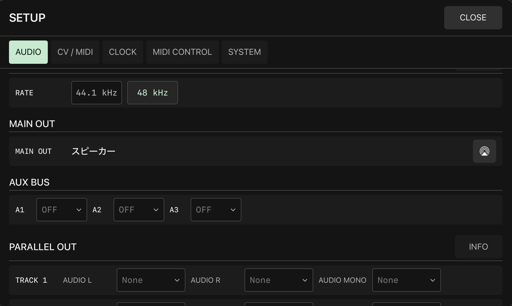
| AUDIO DEVICE | DEVICE dropdown for selecting a multichannel audio device; shows No Device when none is selected. CV output starts as soon as a device is selected. |
| SAMPLE RATE | 44.1 kHz or 48 kHz, default 44.1 kHz. |
| MAIN OUT | Shows the name of the current system audio route, with the system route picker beside it. |
| AUX BUS | A1 to A3 are each assigned a physical channel or OFF. Channels already used for other purposes are marked IN USE. |
| PARALLEL OUT | Parallel output per track: AUDIO L, AUDIO R or MONO. The signal is post-fader, pre-effects. |
| EXTERNAL INPUT | External input per track: OFF, a single channel, or a stereo pair of channels. |
| INPUT COMP | Input latency compensation, 0 to 250 ms in 0.1 ms steps. |
CV / MIDI
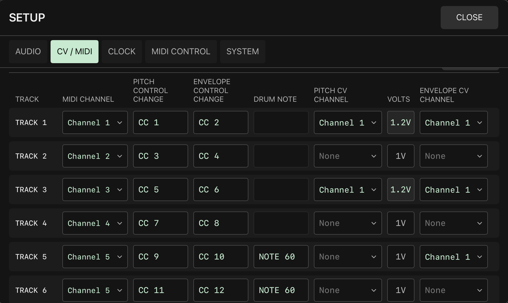
| MIDI OUTPUT | DEVICE dropdown (including None), and MIDI CHANNEL ALL TRACKS, which sets all tracks at once. |
| TRACK ROUTING | One row for each of the 8 tracks, with the columns MIDI CHANNEL, PITCH CONTROL CHANGE, ENVELOPE CONTROL CHANGE, DRUM NOTE (TRACK 5 to 8 only), PITCH CV CHANNEL, VOLTS (1V or 1.2V), ENVELOPE CV CHANNEL. CLEAR ALL is at the top right. CV channels cannot be duplicated; selecting a channel already in use swaps the two. MIDI channels can be duplicated. |
| MOD OUTPUT | Assigns the physical channels of UTILITY OUTPUT 1 to 4. Channels used by track CV cannot be selected; selecting a channel used by another MOD OUTPUT swaps the two. |
| BUCHLA PULSE | SPIKE OFF / ON and WIDTH (ms). |
| ENV DELAY | Envelope delay per track, in ms. |
CLOCK
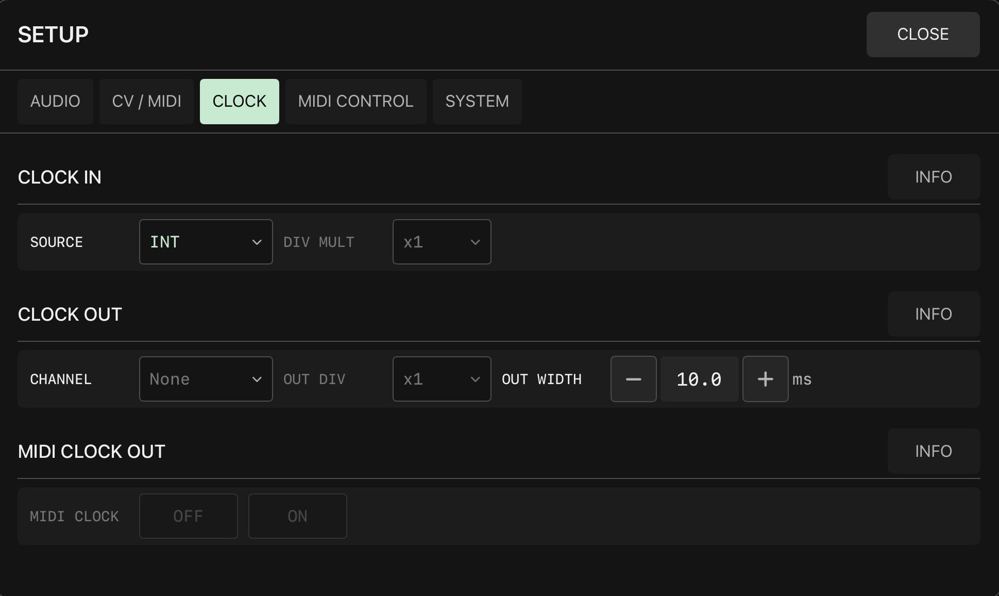
| CLOCK IN | SOURCE: INT / MIDI / CV. DIV MULT: /4, /2, x1, x2, x4, available only with an external source. CV INPUT selects the channel, SIGNAL shows the signal, STATUS shows the state. BPM 20 to 300. MIDI clock is 24 PPQN; 2 seconds without signal is treated as lost. |
| CLOCK OUT | CHANNEL, OUT DIV, OUT WIDTH (ms). |
| MIDI CLOCK OUT | OFF / ON. Dimmed when there is no MIDI output device. |
MIDI CONTROL
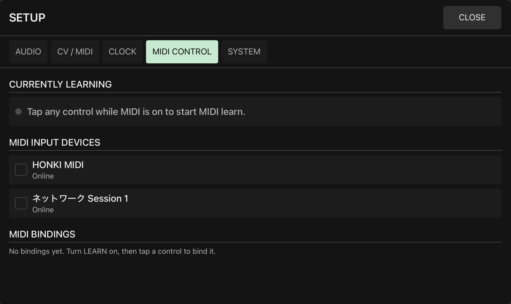
| CURRENTLY LEARNING | Shows the MIDI Learn target that is waiting; a CANCEL button is shown while waiting. |
| MIDI INPUT DEVICES | List of MIDI input devices; more than one can be selected. |
| MIDI BINDINGS | List of bindings. Each item has MODE (LATCH / MOMENTARY), TAKEOVER (JUMP / PICKUP), SCALE (LINEAR / EXP / LOG), MIN and MAX (0 to 100% in 10% steps), and can be deleted singly with REMOVE or all at once with CLEAR ALL. |
SYSTEM
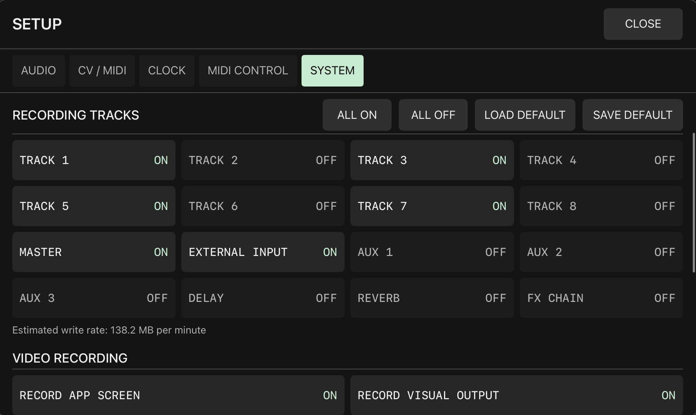
| RECORDING LOCATION | Fixed at Documents/Recordings; the Files app path is "On My iPad / HONKI / Recordings". Sessions holds multitrack recordings and Samples holds sample recordings. |
| RECORDING TRACKS | Selects the items written by multitrack recording. See chapter 14. |
| VIDEO RECORDING | Two switches for recording video together with audio. See chapter 14. |
| GENERATE VELOCITY | A range bar of 1 to 127 per track that sets the velocity range of generation, plus RESET. |
| DIAGNOSTICS | Status text and EXPORT LOG. |
12. MIDI Learn
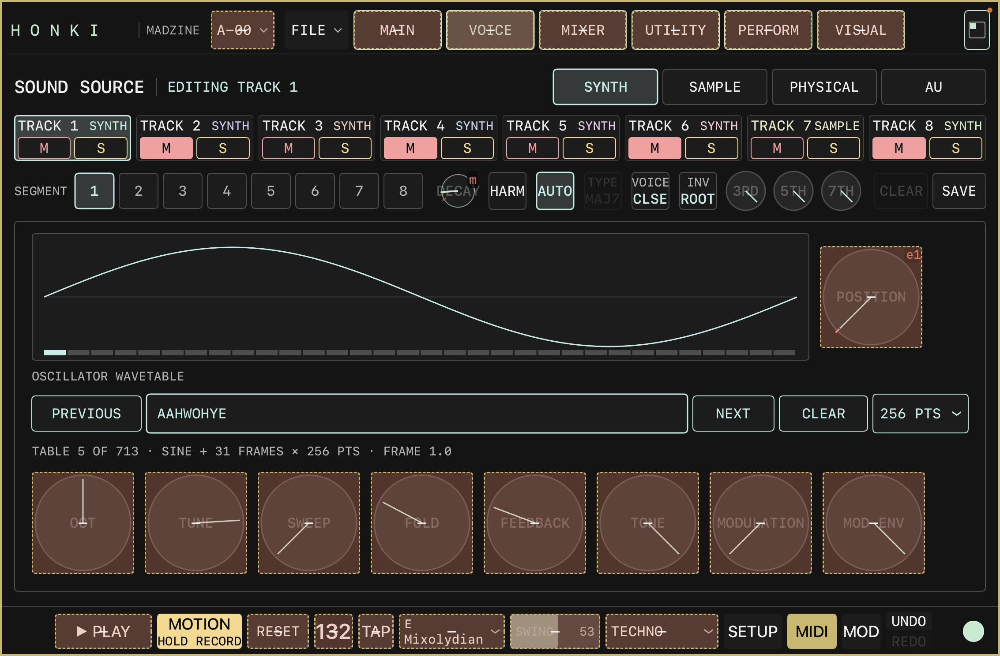
Entering and leaving
- Press MIDI in the Transport or Cmd+L to enter. Assignable controls show a dashed outline; the XY pad shows two corners, the top-left corner for the Y axis and the bottom-right corner for the X axis.
- Press MIDI or Cmd+L again to leave; pressing MOD also leaves. ESC does not leave MIDI Learn mode.
- Assignable targets added after 1.3.4: MIXER PAN, and for FX CHAIN the parameters, DRY WET, RETURN, the effect type (each trigger changes to the next), FREEZE and HOLD (active while held).
Procedure
- Tap a control to enter the waiting state; CURRENTLY LEARNING in SETUP shows the target.
- Send a MIDI message within 10 seconds. Tapping another control switches the target.
- The first matching message completes the binding: buttons are MOMENTARY, everything else is continuous, and the curve defaults to LINEAR. An existing binding is replaced.
Message types
| Bindable | CC, Note, Pitch Bend. |
| Not bindable | Program Change. Aftertouch and SysEx are ignored. |
Binding behavior
| MODE | LATCH or MOMENTARY. |
| TAKEOVER | JUMP jumps straight to the new value; PICKUP takes over only after passing the current value. |
| SCALE | LINEAR, EXP, LOG. |
| MIN / MAX | Mapping range. |
| Page switching | Each of the six pages can bind one message. |
Bindings are stored in midi_mappings.json, with a .bak backup kept alongside. Each parameter can have only one binding.
13. Motion
| Playback | Tap MOTION in the Transport to toggle playback; it is on by default (yellow). Manual operation takes priority; on release the control returns to the recorded value. |
| Recording | Hold MOTION for 1 second to start recording (red); tap while recording to stop. Playback turns on automatically when recording starts. |
| Recording conditions | Data is recorded only when all three hold: recording is on, playback is running, and a finger is on the control. |
| Write timing | Written when recording stops or playback stops. |
| Sample rate | 30 Hz, sample-and-hold. |
| Lane length | Track parameters: one 64-cell lane per segment. Effect and VISUAL parameters: a global 4-bar lane. |
| Recordable | Mixer (including PAN), DECAY, harmonics, source parameters (kick, sample, PHYSICAL; not AU tracks), effects (including the FX CHAIN parameters, DRY WET and RETURN), VISUAL, PERFORM controls. |
| Not recordable | LOCK, DENSITY, wavetable selection, MODEL, POLYPHONY, LOOP, REVERSE, FREEZE, HOLD, source switching, AU parameters. |
| Clearing one parameter | Turn on MOD in the Transport, tap the control, and answer Y to CLEAR MOTION? in the MOD ROUTE panel. |
| Other actions that clear MOTION | CLEAR of a segment, CLEAR in the top bar, and changing the effect of an FX CHAIN position (clears that position only). There is no button that clears all MOTION at once. |
| Indication | Controls with recorded data show an indicator line. |
| Storage | Saved with the bank; can be undone. |
14. Recording
Multitrack recording
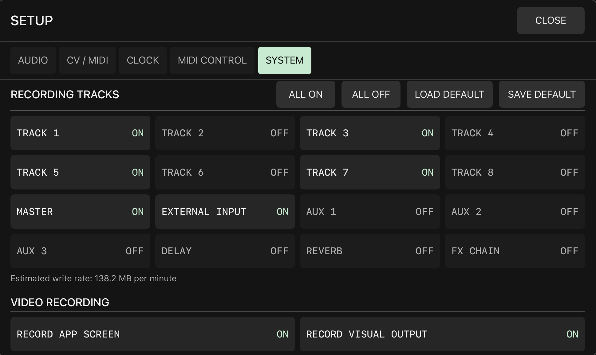
| Start | Press PLAY and choose Y in Y / REC? / N. |
| Stop | Press the red-dot recording stop button and answer Y. Moving the app to the background does not stop recording. When system audio is interrupted the files are closed first, and a new session starts after it resumes; changing the sample rate also starts a new session. |
| RECORDING TRACKS | In the SYSTEM tab of SETUP, select the items to write with 16 switches: TRACK 1 to 8, MASTER, EXTERNAL INPUT, AUX 1, AUX 2, AUX 3, DELAY, REVERB, FX CHAIN. The factory default has TRACK 1 to 8, MASTER and EXTERNAL INPUT on. There are also ALL ON, ALL OFF, LOAD DEFAULT and SAVE DEFAULT. The selection is saved with the project; a project without a stored selection uses the default saved with SAVE DEFAULT. It cannot be changed while recording. The estimated amount written per minute is shown below. When everything is off, "Nothing selected. Recording is unavailable." is shown, and choosing Y only plays. |
| Files | WAV (32-bit float): track1 to track4 mono, track5 to track8 stereo, master stereo; aux1 to aux3 mono; delay and reverb stereo, which are the effect return signals tapped before the main FILTER and MASTER VOLUME. With EXTERNAL INPUT on, tracks with an external input route also save trackN_ext.wav. Tracks are sampled post-fader. |
| VIDEO RECORDING | The SYSTEM tab of SETUP has two switches, RECORD APP SCREEN and RECORD VISUAL OUTPUT, both OFF by default. The settings are stored on the device, not with the project. They cannot be changed while recording. Video starts and ends with the audio recording, and the videos are saved in the same session folder. |
| AppScreen.mp4 | With RECORD APP SCREEN on, the app screen is recorded without using the microphone. The system shows a consent dialog at the start; declining does not affect audio recording. |
| VisualOutput.mp4 | With RECORD VISUAL OUTPUT on, the VISUAL output is recorded: H.264, 1280 x 720, 30 fps, no audio, scaled proportionally with black bars. The visual engine starts automatically if it is not running. |
| Location | Recordings/Sessions/date-time/. -2, -3 are added for repeats within the same second. On iPad, access from On My iPad / HONKI / Recordings in the Files app. |
| Header | Updated every 100 ms; files remain readable if interrupted. |
Sample recording (RECORD on VOICE)
| Source | Master output. |
| Length | Up to 120 seconds. |
| After stopping | Loaded automatically as the track's sample. |
| File | Recordings/Samples/track number_timestamp.wav, stereo 32-bit float. |
15. Keyboard Shortcuts
Requires an external keyboard.
| 1 to 6 | Switch tabs. When the editor overlay is open, switches TRACK 1 to 4 and DRUMS instead. |
| Space | Play / stop, including the recording prompt. |
| Shift+Space | Play only, without recording. |
| Cmd+L | MIDI Learn on / off. |
| Cmd+Z | Undo. |
| Cmd+Shift+Z | Redo. |
| ESC | Closes the editor overlay. |
Touch: swipe the phrase editor overlay down more than 80pt to close it.